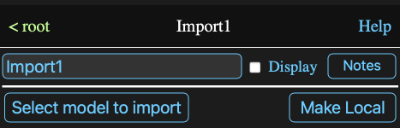

It can occur that a problem requires the same calculation to be used in a number of places with differing inputs. This is easily accomplished by creating a model containing input expressions for the calculation and then copying and pasting it as appropriate with different input formulas.
In most cases this is sufficient and has the advantage of being straightforward and transparent. However if after copying a model numerous times into varying sessions, you discover that you want to modify the model and want to have those changes reflected in all the copies, they must all be modified.
An alternative for these more complicated situations is to have the model import its structure from another session.
Every time a session containing such models is loaded, the contents of the models are read from the root model of the imported sessions and thus any changes to those sessions will be reflected in all the models that import them. The formulas for the input expressions are retained by the importing model so they aren't overwritten by the default imported values.To add an imported model, choose the Imported Model option from the Add Tool to Model menu of the diagram background menu.
This will produce a normal model information view except it will now have an additional Source Session section at the top.
The name of the session whose root model is the template should be entered into the input field (PSCalc in the example).
The Make Local button changes the imported model to a normal model that is no longer updated if changes are made to the template session. Note this isn't reversable other than by removing the model and adding the imported model again.
Other than this section and the diagram icon being labeled Imported rather then Model an imported model behaves like a normal model. You can even make changes to it, but any changes other than to its input expressions will be lost when the session is reloaded.
See the model parameters help.